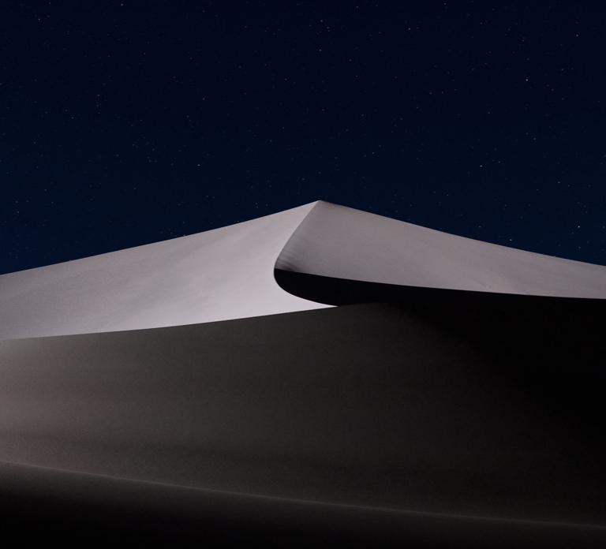
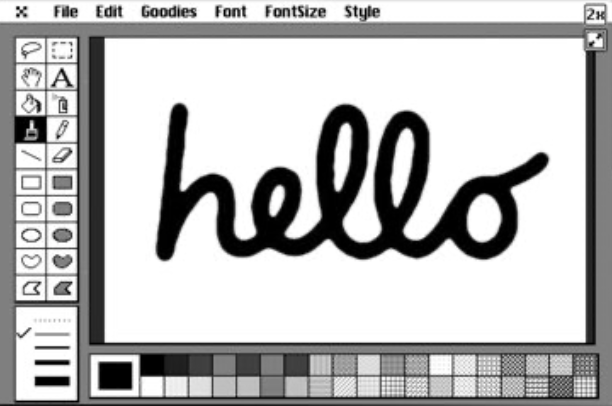

Creativity without borders
Formed of an international team spanning over 7,000 miles, me and the makers of Day to Night Message wanted to foster human connection through—but also include a playful digital flair to—our platform. We wanted it to be a lightweight social platform where users could share quick bursts of creativity, enjoying their limited temporality. We also wanted to add another unique experience where users could share time zones even when they are miles apart.
At a glance
Front-end, Back-end Web Dev
Tools
HTML, CSS, JavaScript (p5.js)
Methods
Prototyping
Time apart, roles apart
Faced with the additional challenge of having our team itself split across time zones, creating this project that would unite us was a satisfying end goal. However, we had to split up the work to finish it efficiently. I was able to make sure that our idea and concept refined over time as well as effectively matched our creative/design language used in the final deliverable.


Multiplying our idea
After we had the simple concepts of creativity, messaging, and time zone sharing budding in our minds, we set out to ideate many options that we could then pull the best parts from to start shaping into our project.


Reiterative creativity
Just like how our project aimed to store an unlimited number of creative bursts on a message board, as each one of us added our contributions to the project alongside constant user feedback we saw our vision come into shape.

Finished web app
In the end, our project successfully fulfilled our goals from the start. We were able to successfully facilitate a session with many users collaborating together artistically while sharing a common time zone. It may have turned out to be a little chaotic, though.
Team members
Evan Bird, Jennifer Cheung, Kai Elwood-Dieu